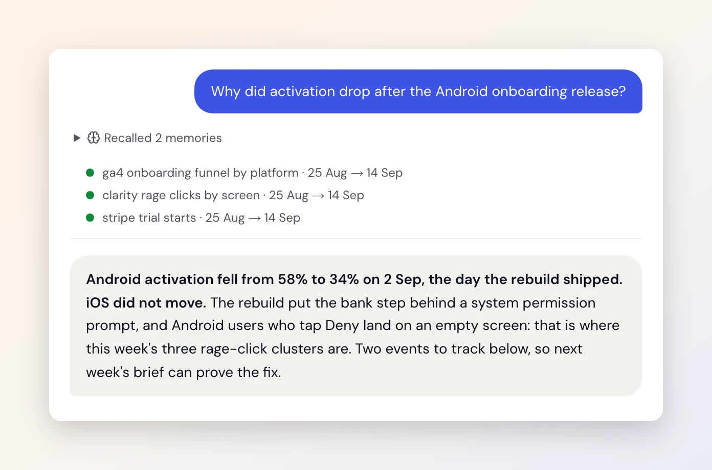

Why did activation drop?
- When
- A number moves on Monday and nobody knows why.
- Today
- Three hours across Mixpanel, Clarity and GrowthBook, still a guess.
- With Duct
- It reads all of them for the one question and answers with the cause, the sources, and the change it proposes.